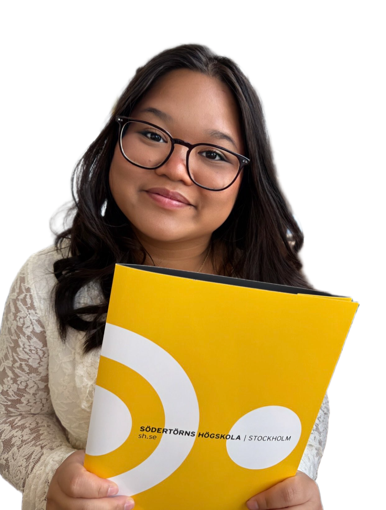

Ariya Kongkam ┃ UX/UI Designer & Graphic Designer


I am a UX-, UI-, and Graphic designer with a passion for Frontend Development and problem solving. I am also a recent graduate from Södertörn Högskola. I enjoy creating thoughtful, user-centered designs and have built experience through academic projects, internships and real client collaboration.
In addition to my creative background, I have experience logistical, communicational and problem-solving experiences from my time as a dispatch planner at Nynas AB. Working as a dispatch planner also gave me the chance to coordinate with internal teams and external partners to ensure smooth supply chain operations.
As a person, I am organized, detail-oriented and thrive in both collaborative and independent environments. My unique blend of design and operation makes me both confident and fastpaced while working both in a team and independently.
Lets get in touch! Contact me 😊

Ariya Kongkam
Email: ariyakongkam123@gmail.com
LinkedIn https://www.linkedin.com/in/ariya-kongkam/